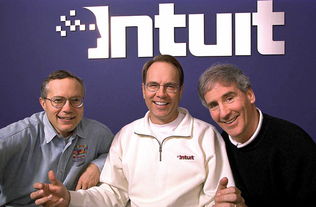
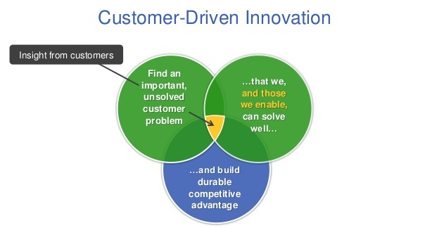

Great Coaches

There are great leaders and there are great coaches. Bill Campbell (to the right in the picture above) is one of Silicon Valley’s most well known coaches, having mentored the Google founders Larry and Sergie, Amazon’s Jeff Bezos, and Apple’s Steve Jobs. He was CEO of Intuit for half a decade before going to be the Chairman of the Board.
I have not had the fortune to interact with Bill during my time at Intuit, but have always had the greatest respect for the legend. However, I had a few opportunities to receive coaching from Scott Cook (to the left in the picture above). Scott Cook, one of the original founders of Intuit, and former CEO is involved as an internal coach, providing inspiration and guidance to innovation teams.
Scott’s approach
There’s a few things about how Scott approached his sessions with our innovation teams that stood out to me, and are a fine blueprint for most leaders.
Listen
I noticed that Scott first went around the room talking to each person and trying to understand different viewpoints from the teams. Innovation teams typically bring together product managers, experience designers and engineers. Scott probed for underlying dissent or differing viewpoints within the team to ensure they were being heard. This is important since it gets people to open up and talk about challenges they are facing. It can also help diagnose issues within a team that may need further resolution.
Scott probed for underlying dissent or differing viewpoints within the team to ensure they were being heard.
Help where help is asked
Next, Scott would ask us where we needed help. And here’s an interesting distinction - I’ve seen a number of leaders jump into problem solving and emphasizing their viewpoint right at the start. But, Scott started with where teams felt they needed assistance. By helping where help was being asked for, he had us listening with an open mind. So right there, it felt more collaborative with his being on the team’s side, working together on solving a problem. He worked with us on the areas we raised, offering suggestions, exploring different approaches, and helping with internal organizational connects to enable moving things forward.
By helping where help was being asked for, he had us listening with an open mind.
Get to the real issue
Scott would then move on to continue to discuss what next as a co-working exercise. The co-working exercise was root cause analysis, drilling down to the core of what the team may be missing and needs help with. Here’s where he would bring out his ideas in the context of what we were doing, and areas where he felt course correction was needed. These were approached in the context of Intuit’s CDI model (Customer Driven Innovation), framed around three key questions

- Find an important, unsolved customer problem
- that we, and those we enable, can solve well
- and build durable competitive advantage
Scott’s feedback oriented around ensuring we were solving for a measurable customer benefit, and that this had been validated by rapid experimentation with real customers. An internal cadence of metrics used at Intuit called Succession Metrics established ‘Love’ criteria that opportunities need to progress through.
- The “Unit of one”, your first customer who sees the benefit, will use your product, and will recommend others (NPS 10).
- A Cohort of customers with strong funnel metrics, high NPS and growth levers identified.
- Market penetration, ability to deliver profitability with scale.
The co-working exercise was root cause analysis, drilling down to the core of what the team may be missing and needs help with.
Summary
So, if you are coaching or mentoring a team, here’s the takeaways for you to remember
- Start by listening to the team, see if there are divergent perspectives that come out
- Help them with where help is asked for first
- Dive into the real issue and work together with the team to solve for it
Did you find this helpful? Let me know!